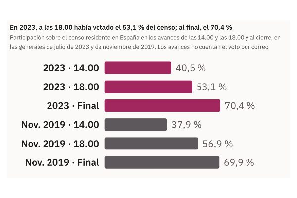

Actualidad · Sevilla-Betis · España
El derbi sevillano se juega en barrios del PP: en Nervión, el del Sánchez-Pizjuán, ganó en 37 de 41 secciones; en la ciudad, el PSOE fue primero en 286 de 521
El día del Sevilla-Betis, Sevilla sección a sección en las elecciones generales de 2023. En el distrito del Villamarín, el PP ganó en 18 de 28 secciones; en la quinta parte más pobre de la ciudad, el PSOE ganó en todas.
Por Nacho G. del Álamo ·
Cada párrafo lleva una etiqueta: dato (cifra comprobable con las fuentes), patrón (relación que se repite, sin afirmar la causa), hipótesis (explicación posible, sin dos fuentes independientes) o contexto (hechos y declaraciones publicados por otros, enlazados). Cómo verificamos
ContextoEsta tarde, a las 18.30, el Sevilla recibe al Betis en el Ramón Sánchez-Pizjuán, en la jornada 13 de LaLiga, según el calendario de LaLiga y El Gol Digital. El estadio sevillista está en el barrio de Nervión, en el distrito del mismo nombre. El Benito Villamarín, el del Betis, está en Heliópolis, al sur, en el distrito de Bellavista-La Palmera. A ocho días de las elecciones generales del 29N, los dos estadios están en distritos donde el PP fue el más votado en 2023, en una ciudad donde el PSOE ganó en más secciones que el PP.
DatoEn las generales de julio de 2023, el PSOE fue primero en 286 de las 521 secciones censales de Sevilla; el PP, en 234, y Sumar, en 1. En votos ganó el PP, con el 37,3 %, por delante del PSOE (33,6 %), Sumar (14,2 %) y Vox (12,3 %). Es lo que contamos en Sevilla, barrio a barrio: el PP gana por mucho en menos secciones, las del centro y las de más renta, y el PSOE, por menos en más secciones, las del norte y el este.
DatoEn el distrito de Nervión, el PP ganó en 37 de las 41 secciones y sacó el 55,9 % de los votos, 18,6 puntos más que en el conjunto de la ciudad. El PSOE se quedó en el 19,4 %, Vox en el 13,3 % y Sumar en el 9,3 %. Votó el 80,0 % del censo, y la renta mediana de sus secciones es de 30.519 € por unidad de consumo. Solo Los Remedios, al otro lado del río, votó más al PP: el 65,3 %.
| Sánchez-Pizjuán (Nervión) | Villamarín (Bellavista-La Palmera) | |
|---|---|---|
| PP | 55,9 % | 43,7 % |
| PSOE | 19,4 % | 26,4 % |
| Vox | 13,3 % | 15,3 % |
| Sumar | 9,3 % | 12,5 % |
| Particip. | 80,0 % | 76,3 % |
| Renta | 30.519 € | 26.090 € |
| Secciones | PP 37 PSOE 4 de 41 | PP 18 PSOE 10 de 28 |
Nervión: el PP, en todas menos cuatro
DatoEn el barrio de Nervión, el del estadio, el PP ganó en 13 de las 14 secciones, con el 52,9 %, y el PSOE sacó el 22,1 %. En el vecino La Buhaira, el PP ganó las 7 secciones con el 65,4 %. En noviembre de 2019, el PP ya era el primero en el distrito, pero con el 37,2 %: entre una elección y otra subió 18,7 puntos, mientras Vox bajaba del 20,3 % al 13,3 % y el PSOE se quedaba casi igual (19,0 % y 19,4 %).
Ver la tabla
| Distrito | PP 2019 | PP 2023 | PSOE 2019 | PSOE 2023 | Vox 2019 | Vox 2023 |
|---|---|---|---|---|---|---|
| Nervión | 37,2 | 55,9 | 19,0 | 19,4 | 20,3 | 13,3 |
| Bellavista-La Palmera | 25,3 | 43,7 | 26,4 | 26,4 | 20,7 | 15,3 |
| Sevilla (ciudad) | 21,8 | 37,3 | 31,8 | 33,6 | 17,5 | 12,3 |
El Villamarín, entre Heliópolis y Bellavista
DatoEl distrito del Villamarín vota más repartido. En Bellavista-La Palmera, el PP ganó en 18 de las 28 secciones y el PSOE, en 10. El PP sacó el 43,7 % y el PSOE, el 26,4 %; votó el 76,3 %. En noviembre de 2019, el PSOE había sacado allí el 26,4 % y el PP, el 25,3 %: el distrito pasó de un empate casi exacto a una ventaja del PP de 17,3 puntos.
DatoDentro del distrito, los dos barrios que rodean el estadio votan casi al revés. Heliópolis, el del Villamarín, es una sola sección censal: el PP sacó el 63,4 %, Vox el 20,9 % y el PSOE el 8,0 %, con una renta mediana de 39.187 €. En Bellavista, al otro lado de la avenida, el PSOE ganó en 8 de las 11 secciones con el 38,0 %, frente al 29,7 % del PP, y la renta mediana es de 17.085 €, menos de la mitad.
La renta, de la grada al voto
PatrónSi se ordenan las secciones de Sevilla por renta y se parten en cinco grupos iguales, el reparto es casi total. El PSOE ganó en las 105 secciones de la quinta parte más pobre, con el 55,0 %, frente al 16,6 % del PP. El PP ganó en las 104 de la quinta parte más rica, con el 59,9 %, frente al 15,2 % del PSOE. La participación va del 56,0 % al 82,2 %.
Ver la tabla
| Quintil | Renta mediana (€) | PP | PSOE | Sumar | Vox | Participación | Secciones | Ganadas por el PP | Ganadas por el PSOE |
|---|---|---|---|---|---|---|---|---|---|
| 1.º | 13.233 | 16,6 | 55,0 | 13,8 | 11,5 | 56,0 | 105 | 0 | 105 |
| 2.º | 16.625 | 21,5 | 46,9 | 17,4 | 11,0 | 67,2 | 104 | 1 | 103 |
| 3.º | 20.620 | 32,4 | 36,3 | 17,2 | 11,2 | 73,1 | 104 | 35 | 69 |
| 4.º | 26.692 | 44,2 | 26,1 | 15,6 | 11,7 | 77,5 | 104 | 94 | 9 |
| 5.º | 33.379 | 59,9 | 15,2 | 7,8 | 15,4 | 82,2 | 104 | 104 | 0 |
PatrónEl distrito de Nervión, con una renta mediana de 30.519 €, está en la parte alta de esa escalera. Los distritos donde el PSOE ganó todas las secciones, Cerro-Amate (66) y Norte (46), están en la baja. En Cerro-Amate, el PSOE sacó el 49,7 % y votó el 61,4 %, casi veinte puntos menos que en Nervión.
Ver la tabla
| Distrito | PP | PSOE | Sumar | Vox | Participación | Renta mediana (€) | Secciones | Ganadas por el PP | Ganadas por el PSOE |
|---|---|---|---|---|---|---|---|---|---|
| Los Remedios | 65,3 | 10,4 | 4,7 | 18,2 | 83,0 | 32.845 | 19 | 18 | 1 |
| Nervión | 55,9 | 19,4 | 9,3 | 13,3 | 80,0 | 30.519 | 41 | 37 | 4 |
| Casco Antiguo | 47,1 | 21,7 | 17,1 | 12,0 | 78,5 | 29.008 | 47 | 40 | 6 |
| Triana | 46,3 | 26,3 | 13,2 | 11,8 | 75,6 | 26.143 | 29 | 25 | 4 |
| Bellavista-La Palmera | 43,7 | 26,4 | 12,5 | 15,3 | 76,3 | 26.090 | 28 | 18 | 10 |
| Sur | 41,8 | 31,9 | 10,8 | 13,4 | 68,9 | 20.435 | 51 | 26 | 25 |
| San Pablo-Santa Justa | 38,2 | 34,1 | 14,1 | 11,3 | 72,6 | 20.835 | 48 | 22 | 26 |
| Este-Alcosa-Torreblanca | 30,3 | 38,8 | 15,4 | 12,4 | 71,1 | 19.414 | 70 | 21 | 49 |
| Macarena | 29,1 | 40,1 | 18,2 | 10,1 | 66,6 | 16.919 | 55 | 13 | 42 |
| Norte | 20,7 | 47,0 | 18,2 | 10,5 | 69,5 | 17.403 | 46 | 0 | 46 |
| Cerro-Amate | 20,3 | 49,7 | 14,9 | 11,8 | 61,4 | 15.226 | 66 | 0 | 66 |
Sevilla, en campaña
ContextoSevilla es la provincia donde el PSOE es más fuerte en Andalucía, y los dos grandes partidos arrancaron allí la campaña el 12 de noviembre. Pedro Sánchez dio su primer mitin en el palacio de congresos Fibes, como contamos en el arranque de la campaña. El mismo día, en la misma ciudad, el presidente de la Junta y del PP andaluz, Juanma Moreno, pidió el voto para Alberto Núñez Feijóo:
«¿Estáis dispuestos a soportar cuatro años más de sanchismo?»
DatoNuestro modelo, que reparte por provincia la media de las encuestas nacionales, deja al PSOE primero en el 56 % de las simulaciones en la provincia de Sevilla, con un reparto central de 4 de los 12 escaños para el PSOE, 4 para el PP, 2 para Vox, 1 para Adelante Andalucía y 1 para Sumar, según la página de encuestas de Sevilla, que se actualiza cada día.
Lo que estos datos no dicen
ContextoLas cifras de sección son de las generales de 2023. Las encuestas del 29N no miden ciudades ni distritos, solo provincias, y nuestro modelo no estima el voto dentro de Sevilla. En 2019 no comparamos a Sumar ni contamos secciones ganadas, porque Unidas Podemos y Más País fueron por separado. Los quintiles comparan secciones de la misma ciudad: describen dónde se vota qué, no el efecto de la renta. 21 secciones no tienen barrio asignado en nuestro mapa y solo cuentan en los totales.
HipótesisY el fútbol no vota. La afición del Sevilla y la del Betis vienen de toda la ciudad y de toda la provincia, y nada de esto dice cómo vota cada una. Lo que sí muestra el mapa es que el derbi se juega en dos distritos donde el PP fue el más votado, en una ciudad que el PSOE gana en secciones. Las calles de cada sección están en Sevilla, barrio a barrio y en cómo votó tu calle.
Preguntas frecuentes
¿Quién ganó las elecciones generales de 2023 en la ciudad de Sevilla?
El PP en votos, con el 37,3 %, por delante del PSOE (33,6 %). Pero el PSOE fue primero en más secciones censales: 286 de 521, frente a 234 del PP.
¿Cómo vota Nervión, el barrio del Sánchez-Pizjuán?
En las generales de 2023, el PP ganó en 37 de las 41 secciones del distrito de Nervión, con el 55,9 % de los votos.
¿Cómo vota el distrito del Benito Villamarín?
En Bellavista-La Palmera, el PP ganó en 18 de las 28 secciones y el PSOE en 10; el PP sacó el 43,7 % y el PSOE, el 26,4 %.
Elecciones en Sevilla · Encuesta de Sevilla · Sevilla, barrio a barrio · El arranque de la campaña · Mestalla y el Bernabéu en las urnas · El derbi vasco en las urnas
Método y fuentes
- Qué se compara
- Las generales de noviembre de 2019 y julio de 2023 en las 521 secciones censales de Sevilla, con los distritos del Sánchez-Pizjuán (Nervión) y del Benito Villamarín (Bellavista-La Palmera) y la renta de cada sección.
- Límites
- Son datos de 2023: las encuestas del 29N no miden distritos. Los distritos y barrios son los de OpenStreetMap; 21 secciones sin barrio asignado solo cuentan en el total. En 2019 no se compara a Sumar ni se cuentan secciones ganadas, porque Unidas Podemos y Más País fueron por separado. Los quintiles describen dónde se vota qué, no el efecto de la renta, y nada dice cómo vota cada afición.
- Cómo se calcula
- Voto de cada partido sobre el total de votos de las secciones del distrito (ponderado por votantes); participación sobre el censo. Quintiles: las secciones de la ciudad ordenadas por renta por unidad de consumo y partidas en cinco grupos iguales. Script: actualidad/src/resumenes/derbi_sevilla.py. Cifras reproducibles con los scripts del expediente de la pieza. Metodología de Actualidad · Metodología del Atlas
- Fuentes
- Ministerio del Interior, resultados de las generales de 2019 y 2023 por sección censal
- INE, Atlas de Distribución de Renta de los Hogares (renta por unidad de consumo por sección)
- LaLiga, horarios de la jornada 13
- El Gol Digital, el derbi del 21 de noviembre
- ESdiario, el acto del PP en Sevilla (13-11-2026)
- Mapa Electoral, encuesta de la provincia de Sevilla
- Autoría
- Nacho G. del Álamo
- Revisión de datos y texto
- Nacho G. del Álamo, 21 de noviembre de 2026
- Publicado · actualizado
- 21 de noviembre de 2026 · 21 de noviembre de 2026
- Correcciones
- Ninguna.
Serie «Camino al 29N»: 173 piezas
- Si la abstención fuera un partido, en 2023 habría quedado por delante del ganador en más de la mitad de las grandes ciudades y en la mitad de las secciones de España
- Voto por correo para las elecciones generales del 29N: el plazo para pedirlo acaba el jueves 19; en 2023, una de cada tres solicitudes llegó en las dos últimas semanas
- Encuestas y debate: tras el cara a cara de 2023, 10 de 14 encuestadoras ampliaron la ventaja del PP; trece días después ganó por 1,4 puntos
- Elecciones generales: una de cada tres secciones cambió de ganador entre 2019 y 2023
- Elecciones generales: las encuestas dan al PSOE entre el 25,5 y el 33,3 %
- Elecciones generales: Vox baja al 17 % en la encuesta diaria de El País
- Encuestas elecciones generales 2026, hoy 18 de noviembre: el PSOE, a dos puntos o menos del PP
- Encuestas elecciones generales 2026, hoy 19 de noviembre: Sondaxe deja al PSOE a 0,7 puntos del PP
- Debate Sánchez Feijóo: hora, dónde verlo y quién gana el cara a cara
- Elecciones generales: el modelo de encuestas da escaño al Frente Amplio en 5 de sus 17 provincias
- Elecciones generales: en Gijón, Vox sacó en 2023 su mejor resultado en Somió, el barrio más rico: 17,0 %
- Encuestas elecciones generales 2026, hoy 20 de noviembre: el PP gana en las cinco, por entre 2,0 y 4,6 puntos
- Veda de encuestas: hasta cuándo se pueden publicar las del 29N
- Cómo votar en las elecciones generales del 29N: horario, qué llevar y cómo saber tu colegio
- A qué hora se sabrán los resultados de las elecciones generales del 29N
- Encuestas elecciones generales 2026, hoy 23 de noviembre: PP y Vox suman mayoría absoluta en las seis
- Programa electoral de PP, PSOE, Vox y Frente Amplio: qué propone cada uno el 29N
- Getafe-Atlético: en la ciudad del Coliseum, el PSOE pasó de ganar en 112 de las 122 secciones a ganar en 74, y el PP se quedó a 2.182 votos
- Estás aquíEl derbi sevillano se juega en barrios del PP: en Nervión, el del Sánchez-Pizjuán, ganó en 37 de 41 secciones; en la ciudad, el PSOE fue primero en 286 de 521
- A una semana del 29N, la mediana de las encuestas da al PP 3,4 puntos de ventaja, 1,2 menos que hace siete días; el lunes 23 es el último día para publicarlas
- Ver las 173 piezas de la serie
Más datos: elecciones en Sevilla · elecciones en Sevilla barrio a barrio desde 1977 · Sevilla calle a calle en el mapa electoral · elecciones generales del 29N de 2026: fecha y escaños por provincia · resultados de las elecciones generales 2026 (29N) y los de 2023 · dónde y cómo votar el 29N: colegio electoral, voto por correo y plazos · más piezas sobre renta y voto.
Sigue leyendo
 Encuestas de hoyEncuestas elecciones generales 2026, hoy 23 de noviembre: PP y Vox suman mayoría absoluta en las seis
Encuestas de hoyEncuestas elecciones generales 2026, hoy 23 de noviembre: PP y Vox suman mayoría absoluta en las seis Crónica de la semanaA una semana del 29N, la mediana de las encuestas da al PP 3,4 puntos de ventaja, 1,2 menos que hace siete días; el lunes 23 es el último día para publicarlas
Crónica de la semanaA una semana del 29N, la mediana de las encuestas da al PP 3,4 puntos de ventaja, 1,2 menos que hace siete días; el lunes 23 es el último día para publicarlas Getafe-AtléticoGetafe-Atlético: en la ciudad del Coliseum, el PSOE pasó de ganar en 112 de las 122 secciones a ganar en 74, y el PP se quedó a 2.182 votos
Getafe-AtléticoGetafe-Atlético: en la ciudad del Coliseum, el PSOE pasó de ganar en 112 de las 122 secciones a ganar en 74, y el PP se quedó a 2.182 votos
A qué hora los resultadosA qué hora se sabrán los resultados de las elecciones generales del 29N Cómo votarCómo votar en las elecciones generales del 29N: horario, qué llevar y cómo saber tu colegio
Cómo votarCómo votar en las elecciones generales del 29N: horario, qué llevar y cómo saber tu colegio Veda de encuestasVeda de encuestas: hasta cuándo se pueden publicar las del 29N
Veda de encuestasVeda de encuestas: hasta cuándo se pueden publicar las del 29N